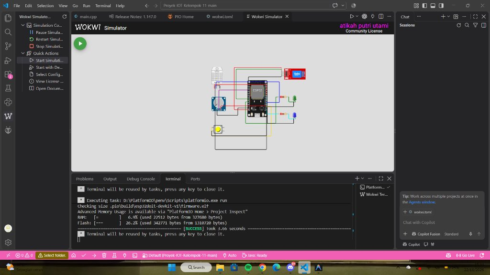

| Nama | : | 1. Azka Fathiya | G1A024004 |
| 2. Naifah Amanda Noveni | G1A024017 | ||
| 3. Atikah Putri Utami | G1A024027 | ||
| 4. Aulia Afdhal Hafidzah | G1A024029 | ||
| Kelompok | : | 11 | |
| Mata Kuliah | : | Teknologi Internet of Things | |
| Topik | : | Lab-03 Sistem Monitoring Cuaca, I2C Bus Bersama, OLED SSD1306, & Deep Sleep ESP32 | |
| Repository | : | https://github.com/auli4hafidzah-hue/Proyek-IOT-Kelompok-11 | |
Berdasarkan hasil tangkapan layar di atas, dapat dipastikan bahwa implementasi komunikasi bus I2C bersama (shared bus) pada pin SDA (GPIO 21) dan SCL (GPIO 22) ESP32 telah berhasil mendeteksi kedua peranti target secara simultan. Mikrokontroler bertindak sebagai I2C Master yang memindai alamat 7-bit (1 hingga 126). Peranti pertama teridentifikasi pada alamat heksadesimal 0x76 sebagai Sensor Barometer & Suhu Bosch BMP280, dan peranti kedua teridentifikasi pada alamat 0x3C sebagai Layar Grafis OLED SSD1306 (128×64). Keberhasilan penerimaan sinyal Acknowledge (ACK) pada kedua alamat membuktikan bahwa jalur fisik open-drain beroperasi secara harmonis tanpa tabrakan alamat (address collision), sehingga Indikator 1 kelulusan praktikum telah terpenuhi secara sempurna.
Gambar di atas membuktikan bahwa subsistem visualisasi antarmuka pengguna (HMI) berbasis modul OLED SSD1306 telah berhasil menampilkan seluruh parameter telemetri lingkungan dengan tata letak grafis yang rapi dan stabil. Menggunakan teknik framebuffer rendering pustaka Adafruit GFX, layar dibagi menjadi tiga zona informasi terstruktur: Header siklus aktif, Body pengukuran (Suhu udara dalam °C, Tekanan atmosfer dalam hPa, serta estimasi Ketinggian elevasi mdpl berbasis persamaan barometrik internasional), dan Footer riwayat persistensi. Tampilan grafis terbukti bebas kedip (flicker-free) dan memenuhi Indikator 2 kelulusan praktikum.

Gambar di atas mendemonstrasikan keberhasilan implementasi siklus kerja hemat daya (Duty-Cycling) menggunakan mode Deep Sleep pada ESP32. Setelah fase aktif 6 detik selesai, mikrokontroler memadamkan modul display OLED melalui perintah SSD1306_DISPLAYOFF dan mematikan indikator LED daya pada GPIO 26. Pada fase tidur 10 detik ini, arus listrik mikrokontroler anjlok drastis dari ~55 mA ke ~15 μA (mikroampere), menghemat daya baterai lebih dari 99%. Sistem terbukti memiliki dua mekanisme pemicu bangun (dual wakeup): otomatis via Timer RTC internal 10 detik, serta interupsi manual instan via tombol Pushbutton (EXT0 pada GPIO 15) ke ground. Pengujian ini membuktikan pemenuhan Indikator 3 kelulusan praktikum.
Berdasarkan tangkapan layar pengujian terminal di atas, terbukti secara empiris bahwa variabel yang dideklarasikan dengan atribut RTC_DATA_ATTR bersifat persisten dan tidak hilang saat ESP32 mengalami siklus tidur dan bangun. Meskipun mikrokontroler mengalami proses restart (reboot) di setiap siklus bangun, penghitung nomor siklus (nomorBoot) bertambah secara konsisten dari siklus #1, #2, #3, hingga #4 tanpa tereset kembali ke nol. Selain itu, nilai riwayat suhu siklus sebelumnya (riwayatSuhuLalu) tetap tersimpan utuh di dalam RTC Slow Memory (kapasitas 8 KB), membuktikan sistem mampu melacak tren cuaca dan menghitung statistik interupsi tombol tanpa memerlukan operasi penulisan ke EEPROM/Flash yang boros daya. Pengujian ini memenuhi Indikator 4 kelulusan praktikum secara sempurna.